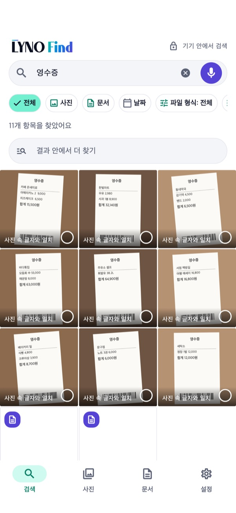
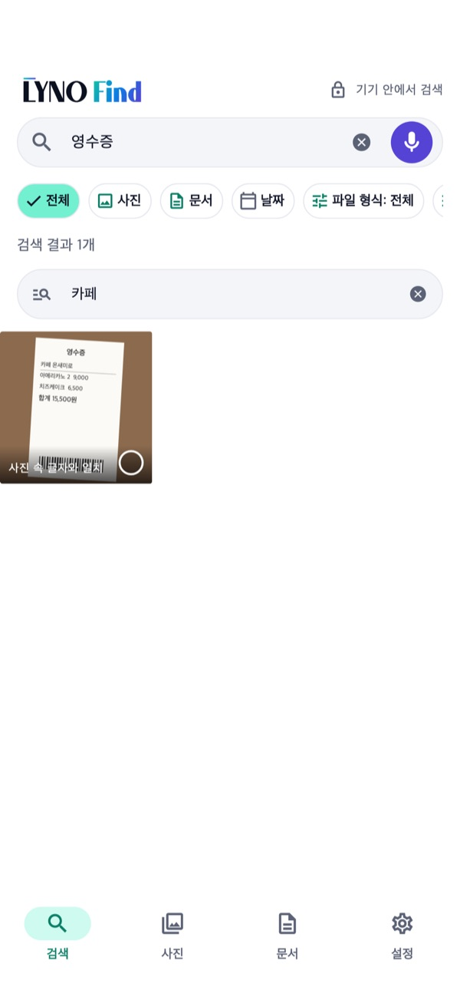

검색 정확도 올리는 방법
1. 찾을 단어만 넣으세요
LYNO Find는 긴 문장보다 찾고 싶은 것의 낱말을 넣을 때 가장 정확합니다. 사진 속 장면(고양이, 바다, 케이크), 사진에 찍힌 글자(와이파이 비밀번호, 영수증 금액, 가게 이름), 문서 속 내용을 한 번에 찾습니다.
- 아래 "검색" 탭을 누르세요.
- 맨 위 검색창에 찾을 것의 낱말만 적으세요. 예:
영수증 - 키보드의 검색 버튼을 누르면 사진과 문서가 함께 나옵니다.
- 위쪽의 "사진", "문서" 칸을 누르면 한 종류만 볼 수 있습니다.

예시: 고양이 영수증 와이파이 비밀번호 보험
💡 "작년에 제주도에서 찍은 사진 찾아줘"처럼 길게 쓰기보다 작년 제주, 제주 바다처럼 짧게 쓰는 것이 더 정확합니다.
💡 잘 안 나오면 비슷한 다른 말로 바꿔 보세요. 예: 자동차 대신 차.
💡 동영상은 아직 찾지 않습니다.
2. 폴더 이름으로 찾으세요
켜 둔 스마트 폴더의 이름을 검색창에 넣으면, 그 폴더에 들어 있는 사진도 결과 아래에 함께 나옵니다.
- "사진" 탭에서 원하는 스마트 폴더가 켜져 있는지 확인하세요(스마트 폴더 활용법 참고).
- 검색창에 폴더 이름을 넣으세요. 예:
강아지 - 폴더 이름 두세 개를 띄어 쓰면 그 폴더들에 모두 들어 있는 사진만 보여 줍니다. 예:
바다 노을
예시: 강아지 바다 노을
💡 폴더가 꺼져 있으면 폴더 이름으로 찾아도 그 폴더 사진은 따로 나오지 않습니다.
3. 마침표와 띄어쓰기 · 다중 검색
여러 가지를 한 번에 찾을 때는 마침표(.)나 쉼표(,)로 나누세요. 띄어쓰기는 문장 그대로 찾을 때 씁니다.
- 마침표나 쉼표로 나누면 다중 검색입니다. 낱말마다 따로 찾아서, 모두 있는 사진을 먼저, 일부만 있는 사진은 그다음에 보여 줍니다. 예:
강아지. 고양이. 바다 - 결과 위에 모두 있는 사진 수와 낱말마다 있는 사진 수를 보여 줍니다.
- 사진을 크게 열면 낱말마다 몇 곳에서 찾았는지 따로 알려 줍니다.
- 띄어쓰기만 하면 그 문장 그대로 찾습니다. 문서 속 문구를 찾을 때 좋습니다. 예:
보험 계약서 - 띄어 써서 찾았는데 결과가 적으면 "따로 찾기" 버튼이 나옵니다. 누르면 낱말마다 다시 찾습니다.
예시: 강아지. 고양이. 바다 계약서, 김민지 보험 계약서
4. 말로 편하게 물어보세요 · 음성 검색
검색창 오른쪽의 마이크를 누르고 말하면, 필요한 낱말만 골라서 함께 나온 사진을 먼저 찾습니다.
- 검색창 오른쪽의 보라색 마이크 버튼을 누르세요.
- 찾고 싶은 것을 평소처럼 말하세요. 예: "바다에서 고양이랑 찍은 사진 찾아줘"
- 말이 끝나면 자동으로 찾습니다. "검색"을 눌러 바로 찾을 수도 있고, "듣기 중지"로 멈출 수 있습니다.
- 아이폰: 앱을 열지 않아도 시리에게 "리노파인드에서 찾아줘"라고 말하고, 무엇을 찾을지 물으면 "강아지 사진"처럼 대답하세요. "계약서 문서"는 문서만, "강아지"만 말하면 둘 다 찾습니다.
- 안드로이드: 앱 아이콘을 길게 눌러 "음성 검색"을 누르거나, 홈 화면 위젯의 마이크를 누르면 바로 말로 찾습니다.
예시: 바다에서 고양이랑 찍은 사진 찾아줘 리노파인드에서 찾아줘
💡 말소리는 밖으로 보내지 않고 휴대폰 안의 음성 인식만 씁니다. 그래서 기기 안 음성 인식을 지원하지 않는 휴대폰(안드로이드는 12 이상에서 지원)에서는 음성 검색이 꺼져 있습니다.
💡 처음 쓸 때 마이크 권한을 허용해야 합니다.
5. 찍은 곳·날짜를 함께 넣으세요
찾을 것과 찍은 곳, 찍은 때를 같이 적으면 사진에 저장된 위치와 날짜로 좁혀서 찾습니다.
- 찾을 낱말 앞이나 뒤에 장소를 적으세요. 예:
일본 바다는 일본에서 찍은 바다 사진입니다. - 날짜도 함께 적을 수 있습니다. 연도, 월, 계절, "작년", "이번 달" 같은 말을 씁니다. 예:
2026년 10월 영수증 - 말로 "일본에서 찍은 바다 사진 찾아줘"라고 해도 됩니다.
예시: 일본 바다 원주 클라이밍 작년 여름 바다 2026년 10월 영수증
💡 사진에 위치 정보가 없으면 장소로 좁혀지지 않습니다. 카메라 앱의 위치 저장이 켜져 있어야 합니다.
6. 결과 안에서 한 번 더 찾으세요
결과가 너무 많을 때, 지금 결과 안에서만 다른 낱말로 다시 찾을 수 있습니다.
- 먼저 넓게 찾으세요. 예:
영수증 - 결과 위의 "결과 안에서 더 찾기" 칸에 다른 낱말을 넣으세요. 예:
카페 - 지금 결과 중에서 그 낱말이 있는 것만 남습니다. 칸 오른쪽의 X를 누르면 원래 결과로 돌아갑니다.

예시: 바다 → 고양이 영수증 → 카페